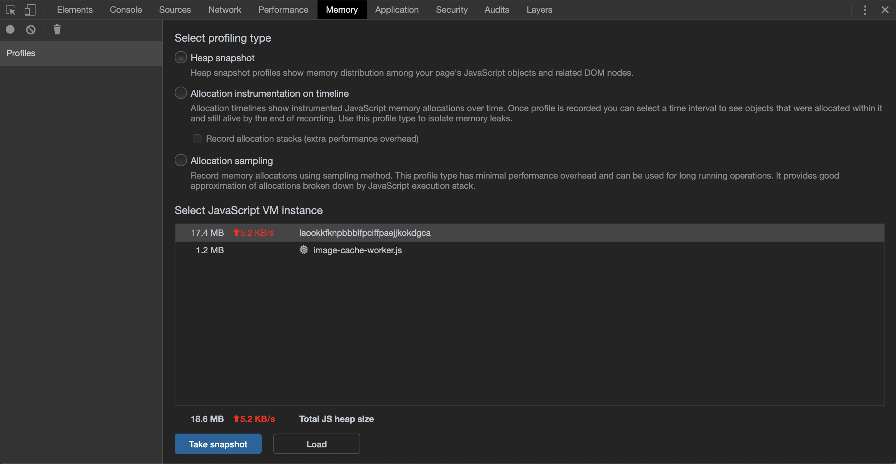
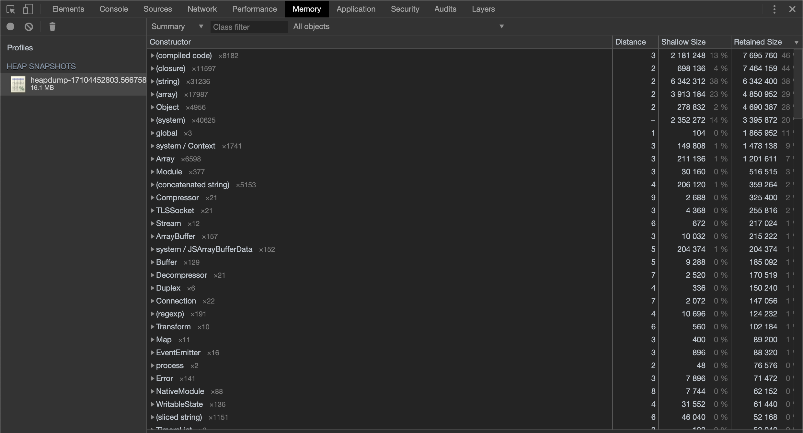
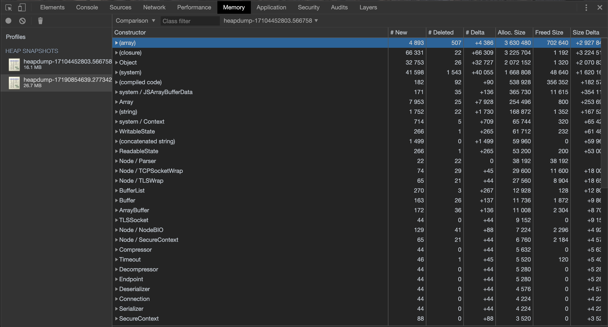
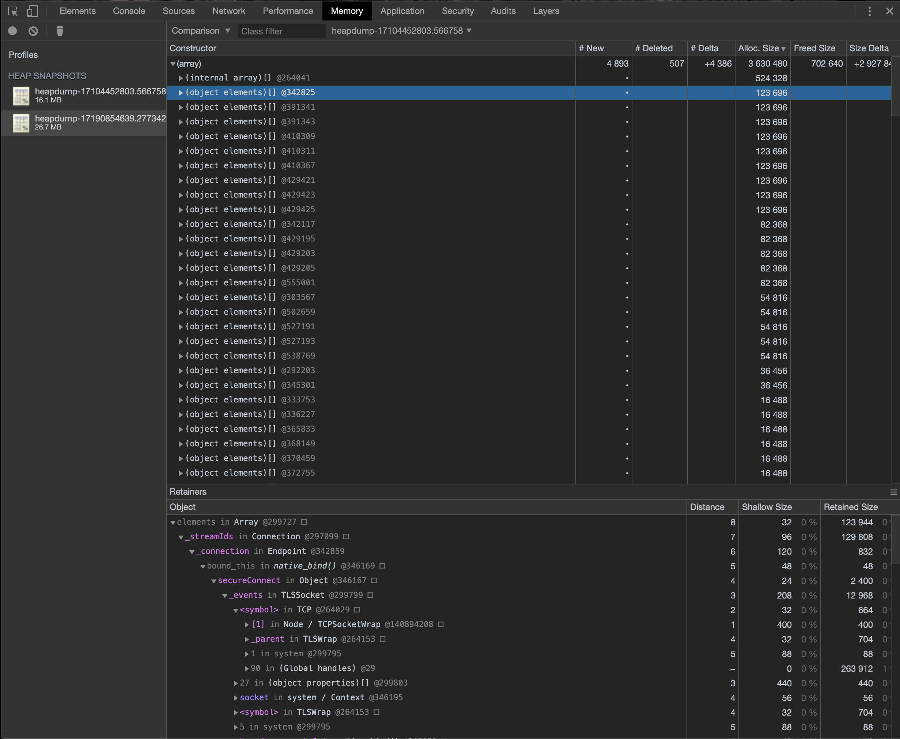
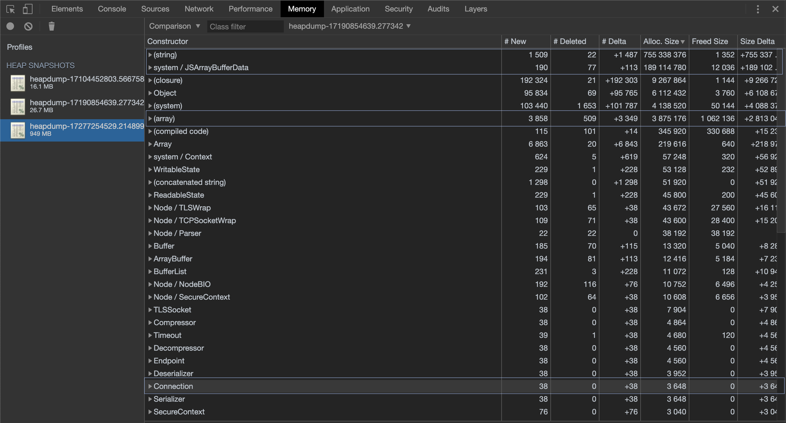
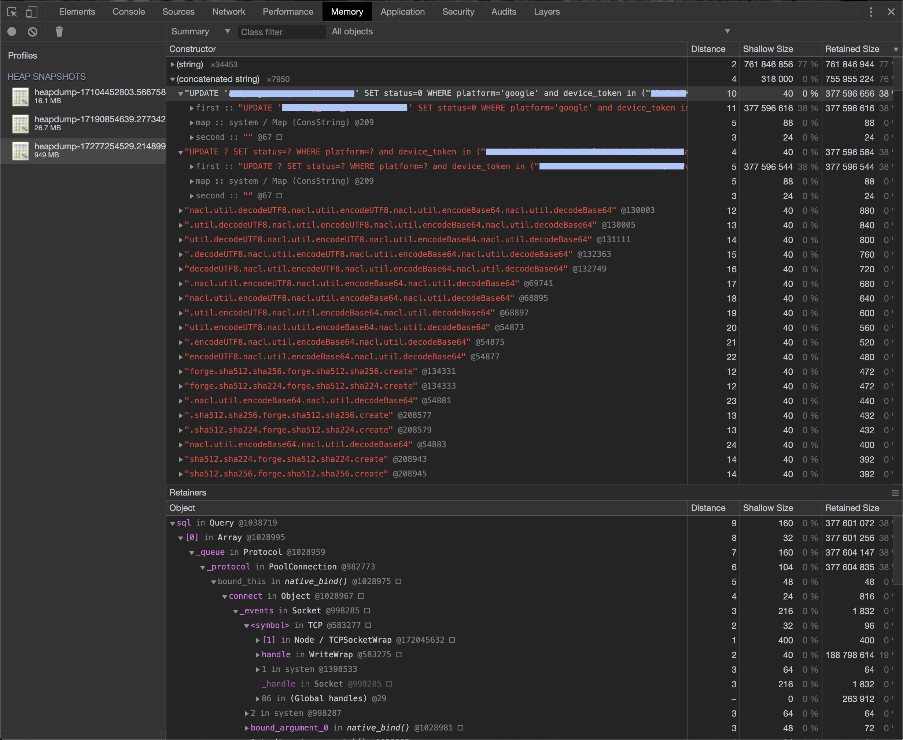
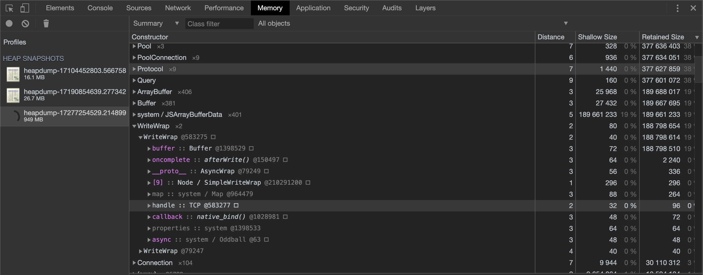
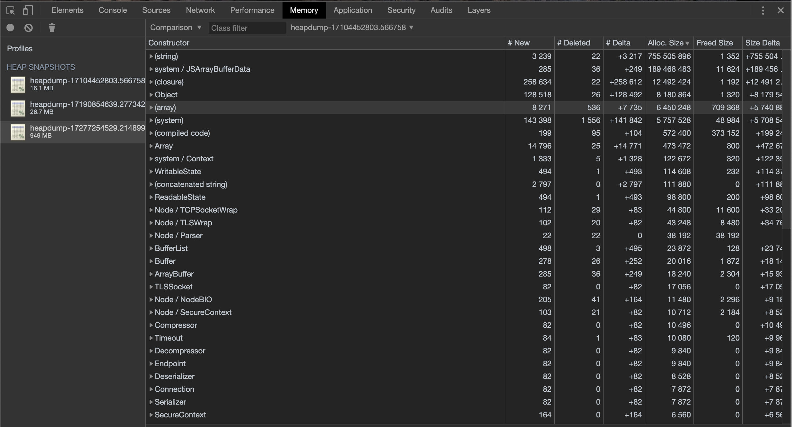
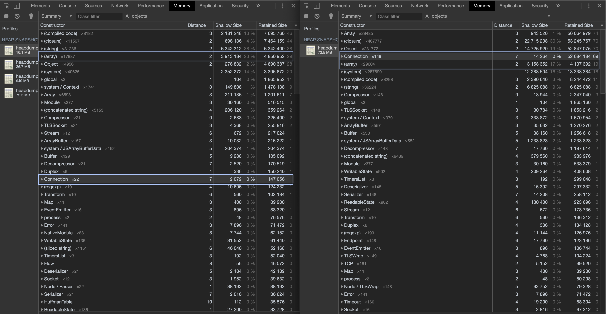

푸시 데몬 메모리 누수 디버깅하기
Nov 6, 2019 00:00 · 5133 words · 11 minute read
지난 6월초 즈음 어느 날 갑자기 팀 슬랙으로 저녁 푸시가 안날아갔다는 메시지를 받았다. 메시지를 받고 곧바로 어드민 서버에 들어가 푸시 데몬의 상태를 확인해보니 중간에 메모리 누수가 발생해 데몬이 죽어있음을 발견했다.
참고로 우리 게임들의 경우 푸시 서버는 따로 두지 않고 있으며 게임별로 각 게임 어드민 서버에서 node로 작성된 푸시 데몬을 돌리고 있다.
그런데 그러고보니 푸시 데몬이 OOM으로 죽은게 이번이 처음은 아니었다. 저번 5월쯤에도 한 번 OOM으로 데몬이 죽은적이 있는데, node를 잘 모르기도 했고 당시에는 그저 발송량이 많아서 죽었을거라는 섣부른 추측만을 뒤로한 채 단순히 데몬만 재시작해주고 대수롭지 않게 넘겼었다.
상황 파악
하지만 이번에도 OOM이 재발한걸로 보아 OOM이 그저 단순한 우연은 아닌 것 같고 푸시 데몬에 뭔가 문제가 있음을 직감해 메모리 프로파일링을 통해 원인을 찾아보기로 했다. 푸시 데몬은 직접 작성한게 아니었기 때문에 먼저 푸시 데몬의 동작 방식부터 파악해야했다. 푸시 데몬은 아주 간단하며 동작 방식은 대략 다음과 같다.
- 일정 간격마다 스케줄 DB에서 스케줄 날짜 및 진행 상태 (
대기|진행|완료) 체크 - 현재 시간과 가장 가까운 대기중인 스케줄이 있을 경우 플랫폼별 푸시 발송 시작
- 푸시 토큰 DB로부터 플랫폼별 토큰을 가져온 뒤 일정 개수마다 푸시 발송
- 3번 과정의 푸시 발송은 일정 간격마다 재귀 호출되면서 남은 토큰을 계속 발송
- 발송할 토큰이 모두 소진되면 푸시 발송을 종료하고 1번으로 돌아감
// iOS 푸시 예시
function _sendIOS() {
if (targetTokensI.length > 0 || !isGetTokenFinished) {
setTimeout(_sendIOS, 1000);
if (targetTokensI.length > 0) {
let requestCnt = 0;
while (targetTokensI.length > 0 && requestCnt++ < REQUEST_COUNT_I) {
sendCntI++;
// do something
PushIOS.send(sched, tokens, msgI).then(result => {
// callback
}).catch(reason => {
// callback
});
}
}
} else {
if (sendCntI > 0) {
setTimeout(_sendIOS, 1000);
} else {
// complete
}
}
}
동작 방식을 파악한 다음에는 힙 메모리 프로파일러를 심어 푸시마다 그리고 주기적으로 힙 메모리 덤프를 떠 메모리가 누수되는 부분을 찾아보기로 했다.
프로파일링
힙 메모리 덤프에는 node-heapdump를 사용했는데, 사용법이 매우 간단했고 크롬만 있으면 바로 분석할 수 있었기에 큰 고민 없이 선택했다.
설치는 npm install heapdump로 설치하면 되고 사용법은 아래와 같이 매우 간단한데, heapdump를 가져온 뒤 덤프할 위치에서 writeSanpshot만 추가해주면 된다.
주의할 점은 프로세스의 힙 메모리 전체를 덤핑하기 때문에 유닉스 기반 OS에서는 스냅샷을 찍는 시점에 메모리를 50% 이상 사용하고 있다면 덤프가 제대로 안될 수도 있다.
var heapdump = require('heapdump');
//
// 푸시 로직
//
function checkNextSched() {
getSched().then(sched => {
getTokensQuery(sched).then(excuteSched).then(() => {
// 푸시 발송 완료시 힙 메모리 덤프
heapdump.writeSnapshot((err, filename) => {
console.log('Heap dump written to', filename);
});
// do something
setTimeout(checkNextSched, 10000);
}).catch((reason) => {
// do something
setTimeout(checkNextSched, 10000);
});
}).catch(reason => {
// do something
setTimeout(checkNextSched, 1000);
});
}
설정은 완료되었으니 푸시 시간을 피해 데몬을 재시작해주면 준비는 끝난다. 그럼 이제 푸시가 날아갈 때까지 기다리면 되느냐라고 할 수 있지만 그건 아니다. 만약 1번 과정에서 누수가 발생하고 있다면 해당 누수도 발견할 수 있어야 때문에 푸시가 날아가기 전까지 주기적으로 덤프를 떠보는 것도 좋은 생각이었다. 중간 중간 임의의 시간에 스냅샷을 찍기 위해서는 스냅샷 스케줄링 코드를 추가해줘야 했는데 다행히도 node-heapdump가 SIGUSR2 시그널을 받고 있었기에 중간 중간 푸시 데몬 프로세스에 해당 시그널만 날려주면 스냅샷을 남길 수 있었다.
$ kill -USR2 <pid>
이렇게 해서 우선 푸시가 날아가기 전까지 몇 번 스냅샷을 찍으면서 1번 과정에서 누수가 발생하고 있는지 확인해본 결과 메모리는 거의 그대로 유지되었으며 아무런 이상 신호는 없었다. (이 때 남긴 스냅샷은 당시 삭제했었는지 남아 있지 않아 결과 첨부는 어렵지만 스냅샷 사이즈가 일정하게 유지되었다.)
메모리 누수 발견
때문에 메모리 누수는 2번 이후로 발생하는 것으로 판단할 수 있었고 실제 푸시가 날아가기 전까지 기다렸다가 푸시가 날아간 이후로 남은 스냅샷을 확인하기로 했다. 푸시가 발송되는 도중인지 푸시가 발송될 때마다인지를 확인하기 위해 1회가 아닌 아침/저녁으로 나가는 수 번의 푸시를 며칠동안 남겨 스냅샷을 비교해보기로 했다.
$ ls -lha *.heapsnapshot | awk '{print $1, $5, $9}' | column -t
-rw-r--r-- 12M heapdump-17104452803.566758.heapsnapshot
-rw-r--r-- 26M heapdump-17190854639.277342.heapsnapshot
-rw-r--r-- 64M heapdump-17277254529.214899.heapsnapshot
-rw-r--r-- 103M heapdump-17333057024.799895.heapsnapshot
-rw-r--r-- 135M heapdump-17363657258.889398.heapsnapshot
-rw-r--r-- 207M heapdump-17419458486.389693.heapsnapshot
-rw-r--r-- 259M heapdump-17450057645.805575.heapsnapshot
-rw-r--r-- 417M heapdump-17536456168.879717.heapsnapshot
-rw-r--r-- 609M heapdump-17622858433.605524.heapsnapshot
-rw-r--r-- 720M heapdump-17675062490.881694.heapsnapshot
파일명에 포함된 시간값은
MONOTONIC CLOCK값으로 monotonic clocks는 유닉스 타임과는 달리 보통 어떤 특정 시간을 기준으로 지금까지 흐른 시간으로 계산된다. (보통 부팅 시간 기준)
남은 스냅샷을 확인해보니 스냅샷 사이즈가 갈수록 증가하고 있음을 발견했다. 심지어는 갈수록 누수 증분량이 증가하기까지 하고 있음을 확인할 수 있다. (물론, 증분량이 큰 덕분에(?) 누수가 발생한 지점이 눈에 확 띄어 누수 원인을 파악하기에는 수월했다.)
스냅샷을 통해 메모리 누수가 발생하고 있음을 명백히 확인할 수 있었고 곧바로 스냅샷을 로컬로 가져와 분석을 시작했다. 스냅샷은 크롬 인스펙터의 Memory 탭에서 로드할 수 있으며 로드가 완료되면 다음과 같은 화면을 통해 메모리 프로파일링을 진행할 수 있다. (아래 화면은 Retained Size로 정렬된 화면이다.) 대략 훑어보면 (string), (array), (system) 등이 상당수의 메모리를 차지하고 있음을 볼 수 있는데 (Shallow Size 기준), 사실 “참조”를 제외하면 실 메모리 공간을 차지하는 것들이 대부분 문자열 아니면 배열이기 때문에 이는 사실 큰 의미는 없다. 즉, 이 문자열과 배열들이 “무엇”이고 이들을 실제로 참조하고 있는 “객체”를 찾는게 중요하다.
여기서 잠시 Shallow Size와 Retained Size의 차이점을 간단하게 설명하자면, Shallow Size는 해당 객체 자체가 실제로 보유하고 있는 메모리의 크기이며 Retained Size는 해당 객체 및 객체가 참조하고 있는 다른 모든 객체의 Shallow Size를 합한 것이다. 즉, Retained Size는 “(GC에 의해) 해당 객체가 삭제되면 확보할 수 있는” 메모리의 크기라고 생각하면 된다.
또한 모든 메모리 크기의 단위는 바이트 (Byte)이다.
참고: 메모리 용어


따라서 첫 번째 스냅샷의 메모리 사용 현황만 봐서는 메모리가 대략 어떤 객체들에 의해 사용되고 있음을 파악하는 것외에는 얻을 수 있는 정보가 많이 없었다.
분석 및 원인 파악
크롬의 메모리 프로파일러가 좋은 이유는 스냅샨간 비교 기능이 있어 어떤 객체 및 메모리가 추가되고 삭제되었는지 대한 자세한 정보를 분석할 수 있다는 것이다. 따라서 누수에 대한 좀 더 유의미한 정보를 얻기 위해 스냅샷간 메모리 사용량을 비교해보았다.
다음은 처음 두 스냅샷간의 비교 결과이다. (heapdump-17104452803... ~ heapdump-17190854639...)

# New: 새로운 객체수,# Deleted: 제거된 객체수,# Delta: 증분량 (New-Deleted)
Alloc. Size: 추가 할당된 메모리,Freed Size: 해제된 메모리,Size Delta: 증분량 (Alloc-Freed)
Alloc. Size 열을 기준으로 정렬해보면 (array)의 추가 할당이 눈에 띄게 증가한 것을 볼 수 있다 (+3,630,480). 다음은 (array) 항목을 펼친 목록으로, 다수의 (object elements)[]가 추가되었음을 볼 수 있고 또한, Retainers (참조자)를 통해 이 객체의 참조자가 Connection이라는 객체임을 확인할 수 있다.

실제로 이전 비교 결과 스크린샷의 뒤에서 세 번째 항목을 보면 44개의 Connection이라는 객체가 추가되었음을 볼 수 있으며 (# New가 44), 이 외에도 44개의 TLSSocket, Serializer 등이 추가된 것으로 보아 푸시 발송중 44개의 추가 커넥션이 발생했음을 알 수 있다. 그런데 푸시 발송 과정중 직접적으로 커넥션을 생성하는 부분은 스케줄링과 푸시 결과를 업데이트하는 부분밖에 없었기 때문에 첫 발견에서는 다소 의아한 결과였다. 설령 추가 커넥션이 발생했다해도 TCP 커넥션이 아직 종료되지 않은 상태에서 스냅샷이 찍혔을 수도 있었기 때문에 두 번째와 세 번째 스냅샷의 비교 결과와 함께 첫 번째와 세 번째 스냅샷의 비교 결과를 추가로 확인해 보았다.
두 번째와 세 번째 스냅샷의 비교 결과는 다음과 같다. (heapdump-17190854639... ~ heapdump-17277254529...)

이 비교 결과에서는 매우 큰 문자열 ((string))과 버퍼 객체 (JSArrayBufferData) 그리고 첫 번째 비교 결과에서 봤던 (array) 가 추가되었음을 볼 수 있다.
언뜻 보면 두 개의 매우 큰 객체로 인해 메모리 사용량이 급증한 것처럼 보일 수도 있으나 이 둘은 메모리 누수의 원인이 아니었다. 이 객체들의 정체는 세 번째 스냅샷의 단독 스냅샷 결과를 확인해보면 알 수 있다.

우선 처음에 보였던 문자열 객체는 푸시 발송이 끝난 후 각 토큰별로 결과를 업데이트하는 쿼리에 대한 문자열로 이는 나중에 봤을 때 GC에 의해 정상적으로 해제되고 있었다. 스냅샷에 나타난 이유는 스냅샷을 푸시 발송 직후에 덤프했기 때문에 그 순간 동안 해제되지 않은 문자열이 껴들었던 것이다. (이에 대한 검증은 다음 스냅샷에서 확인할 수 있었는데 곧 확인해볼 것이다.)

마찬가지로 JSArrayBufferData에 추가된 큰 버퍼 객체 또한 어떤 TCP 커넥션의 스트림 종료시 사용한 버퍼로 보였으며 추후에 GC에 의해 릴리스 됨을 확인했다.
대신 첫 번째와 두 번째의 비교 결과와 같이 (array)가 증가했으며 이와 비례해서 Connection의 참조 메모리도 계속 커지고 있음을 볼 수 있었다. 이 부분은 첫 번째와 세 번째 스냅샷의 비교 결과를 함께 보면 계속 증가하는 추세라는걸 파악할 수 있다.
다음은 첫 번째와 세 번째 스냅샷의 비교 결과이다. (heapdump-17104452803... ~ heapdump-17277254529...)

(array)가 꾸준히 증가하고 있으며 Connection의 개수는 두 번째와 세 번째 스냅샷에서 생성된 만큼 (44 + 38) 증가한 것을 볼 수 있다.
마지막 확인을 위해 네 번째 스냅샷과 비교함으로써 어떠한 커넥션에 의해 메모리 누수가 발생하고 있음을 확신할 수 있었다.

두 스냅샷 간에 Retained Size가 증가하고 있는 (메모리를 실제로 차지하는 “값”이 아닌) 참조 객체는 Connection 객체임을 볼 수 있다. (개수는 88개에서 149개로 더 늘어난 상태이며 참조 크기는 4,850,952에서 52,684,184로 늘어났다.)
즉, TLS를 사용하는 어떤 TCP 커넥션이 계속 열리고 있는게 메모리 누수의 원인임을 짐작할 수 있었고 커넥션이 계속 증가하면서 기존 커넥션이 닫히지 않고 있다는건 (기존 커넥션이 닫히고 있지 않다는건 각 스냅샷마다 커넥션 객체가 증가함과 동시에 동일한 메모리 주소를 사용하는 커넥션이 사라지지 않고 계속 잔존함으로 확인) 현재 어드민 서버에서도 계속 오픈되어 있을거라는 것을 의미했고 netstat으로 간단히 확인해 볼 수 있는 부분이었다.
$ netstat -ant
Active Internet connections (servers and established)
Proto Recv-Q Send-Q Local Address Foreign Address State
tcp 0 0 0.0.0.0:443 0.0.0.0:* LISTEN
tcp 0 0 0.0.0.0:12222 0.0.0.0:* LISTEN
tcp 0 0 0.0.0.0:80 0.0.0.0:* LISTEN
tcp 0 0 172.20.57.12:58478 17.188.166.96:443 ESTABLISHED
tcp 0 0 172.20.57.12:58240 172.20.254.5:3306 ESTABLISHED
tcp 0 0 172.20.57.12:58480 17.188.166.96:443 ESTABLISHED
tcp 0 0 172.20.57.12:52734 52.69.17.201:80 ESTABLISHED
tcp 0 0 172.20.57.12:48378 172.20.2.71:6379 ESTABLISHED
tcp 0 0 172.20.57.12:40852 172.20.254.5:3306 ESTABLISHED
tcp 0 0 172.20.57.12:33710 17.188.168.11:443 ESTABLISHED
tcp 0 0 172.20.57.12:58430 17.188.166.96:443 ESTABLISHED
tcp 0 0 172.20.57.12:12222 116.124.50.42:62970 ESTABLISHED
tcp 0 0 172.20.57.12:12222 116.124.50.42:63362 ESTABLISHED
tcp 0 0 172.20.57.12:58392 17.188.166.96:443 ESTABLISHED
tcp 0 0 172.20.57.12:33346 172.20.2.71:6379 ESTABLISHED
tcp 0 0 172.20.57.12:33596 17.188.168.11:443 ESTABLISHED
tcp 0 0 172.20.57.12:40850 172.20.254.5:3306 ESTABLISHED
tcp 0 0 172.20.57.12:54334 17.188.163.139:443 ESTABLISHED
tcp 1 0 172.20.57.12:43536 103.246.56.17:80 CLOSE_WAIT
tcp 0 0 172.20.57.12:33970 17.188.168.11:443 ESTABLISHED
tcp 0 0 172.20.57.12:33608 17.188.168.11:443 ESTABLISHED
tcp 0 0 172.20.57.12:51334 17.188.168.15:443 ESTABLISHED
tcp 0 0 172.20.57.12:54106 17.188.163.139:443 ESTABLISHED
tcp 0 0 172.20.57.12:33620 17.188.168.11:443 ESTABLISHED
tcp 0 0 172.20.57.12:12222 116.124.50.42:58070 ESTABLISHED
tcp 0 0 172.20.57.12:40730 17.188.168.8:443 ESTABLISHED
tcp 0 0 172.20.57.12:55140 17.188.167.203:443 ESTABLISHED
tcp 0 0 172.20.57.12:40942 172.20.255.79:3306 ESTABLISHED
tcp 0 0 172.20.57.12:12222 116.124.50.42:60113 ESTABLISHED
tcp 0 0 172.20.57.12:33982 17.188.168.11:443 ESTABLISHED
tcp 0 0 172.20.57.12:51034 17.188.168.15:443 ESTABLISHED
tcp 0 0 172.20.57.12:12222 116.124.50.42:52438 ESTABLISHED
tcp 0 0 172.20.57.12:12222 116.124.50.42:54726 ESTABLISHED
tcp 0 0 172.20.57.12:54270 17.188.163.139:443 ESTABLISHED
tcp 0 0 172.20.57.12:36142 172.20.2.71:6379 ESTABLISHED
tcp 0 0 172.20.57.12:54322 17.188.163.139:443 ESTABLISHED
tcp 0 27 172.20.57.12:40940 172.20.255.79:3306 ESTABLISHED
tcp 0 0 172.20.57.12:38322 172.20.254.156:3306 TIME_WAIT
tcp 0 0 172.20.57.12:33670 17.188.168.11:443 ESTABLISHED
tcp 0 0 172.20.57.12:43524 15.164.111.246:80 ESTABLISHED
tcp 0 0 172.20.57.12:49136 17.188.165.138:443 ESTABLISHED
tcp 0 0 172.20.57.12:48236 15.164.111.246:80 ESTABLISHED
tcp 0 0 172.20.57.12:40554 17.188.168.8:443 ESTABLISHED
tcp 0 0 172.20.57.12:52540 52.69.17.201:80 ESTABLISHED
tcp 0 0 172.20.57.12:48882 17.188.165.138:443 ESTABLISHED
tcp 0 0 172.20.57.12:54042 17.188.163.139:443 ESTABLISHED
tcp 0 0 172.20.57.12:54888 17.188.167.203:443 ESTABLISHED
tcp 0 0 172.20.57.12:54132 17.188.163.139:443 ESTABLISHED
tcp 0 0 172.20.57.12:33824 17.188.168.11:443 ESTABLISHED
tcp 0 0 172.20.57.12:54188 17.188.167.205:443 ESTABLISHED
tcp 1 0 172.20.57.12:45584 52.69.17.201:80 CLOSE_WAIT
tcp 0 0 172.20.57.12:40848 172.20.254.5:3306 ESTABLISHED
tcp 0 0 172.20.57.12:40846 172.20.254.5:3306 ESTABLISHED
tcp 0 0 172.20.57.12:12222 116.124.50.42:64423 ESTABLISHED
tcp 0 0 172.20.57.12:49046 17.188.165.138:443 ESTABLISHED
tcp 0 5412 172.20.57.12:12222 116.124.50.42:63158 ESTABLISHED
tcp 0 0 172.20.57.12:51322 17.188.168.15:443 ESTABLISHED
tcp 0 0 172.20.57.12:55062 17.188.167.203:443 ESTABLISHED
tcp 0 0 172.20.57.12:58492 17.188.166.96:443 ESTABLISHED
tcp 0 0 172.20.57.12:40718 17.188.168.8:443 ESTABLISHED
tcp 0 0 172.20.57.12:40754 17.188.168.8:443 ESTABLISHED
tcp 0 0 172.20.57.12:51084 17.188.168.15:443 ESTABLISHED
tcp 0 0 172.20.57.12:54310 17.188.163.139:443 ESTABLISHED
tcp 0 0 172.20.57.12:55226 17.188.167.203:443 ESTABLISHED
tcp 0 0 172.20.57.12:58404 17.188.166.96:443 ESTABLISHED
tcp 0 0 172.20.57.12:51122 17.188.168.15:443 ESTABLISHED
tcp 0 0 172.20.57.12:48894 17.188.165.138:443 ESTABLISHED
tcp6 0 0 :::12222 :::* LISTEN
netstat으로 열려있는 모든 TCP 커넥션을 확인해본 결과 443 포트로 연결되어 있는 17.x 형태의 아이피들을 확인할 수 있었고, 위치는 애플이 위치한 캘리포니아 쿠퍼티노로 확인되었다. 즉, iOS 푸시 발송시 사용한 APNS 푸시 서버로의 커넥션이 오픈된 이후부터 줄곧 닫히지 않고 있던게 문제였던 것이다. 실제로 이 때 열려있던 TCP 커넥션 수와 스냅샷에서 발견된 Connection의 개수가 일치했기 때문에 루트 원인임을 확신할 수 있었다. 또한, 사용하고 있던 node-apn 레포를 가봐도 커넥션이 닫히지 않아 메모리 누수가 발생한다는 이슈가 이미 오픈되어 있었다.
메모리 누수 해결
이에 대한 해결책은 그냥 커넥션을 매번 닫아주는 것이다. 즉, 푸시 발송이 끝나면 명시적으로 커넥션을 shutdown 하도록 수정해주면 된다.
// push.apns.js
exports.shutdown = function (sched) {
const provider = getProvider(sched);
provider.shutdown();
}
// push.js
function _sendIOS() {
if (targetTokensI.length > 0 || !isGetTokenFinished) {
setTimeout(_sendIOS, 1000);
if (targetTokensI.length > 0) {
let requestCnt = 0;
while (targetTokensI.length > 0 && requestCnt++ < REQUEST_COUNT_I) {
sendCntI++;
// do something
PushIOS.send(sched, tokens, msgI).then(result => {
// callback
}).catch(reason => {
// callback
});
}
}
} else {
if (sendCntI > 0) {
setTimeout(_sendIOS, 1000);
} else {
// 명시적 shutdown
PushIOS.shutdown();
}
}
}
적용 결과 메모리 누수는 완전히 사라졌으며 지금까지도 메모리 누수는 발생하지 않고 있다.
$ ls -lha *.heapsnapshot | awk '{print $1, $5, $9}' | column -t
-rw-rw-r-- 9.3M heapdump-18831595953.548940.heapsnapshot
-rw-rw-r-- 11M heapdump-18832610819.917159.heapsnapshot
-rw-rw-r-- 11M heapdump-18832836995.407819.heapsnapshot
-rw-rw-r-- 11M heapdump-18833973163.922529.heapsnapshot
-rw-rw-r-- 11M heapdump-18891390814.498447.heapsnapshot
-rw-rw-r-- 11M heapdump-18892286517.122817.heapsnapshot
-rw-rw-r-- 10M heapdump-18892588891.59947.heapsnapshot
-rw-rw-r-- 11M heapdump-18898292078.640738.heapsnapshot
-rw-rw-r-- 11M heapdump-18905494756.263309.heapsnapshot
-rw-rw-r-- 11M heapdump-18922050710.47180.heapsnapshot
-rw-rw-r-- 11M heapdump-19064062110.803710.heapsnapshot
-rw-rw-r-- 11M heapdump-19515265529.704940.heapsnapshot
-rw-rw-r-- 11M heapdump-19515321457.95006.heapsnapshot
-rw-rw-r-- 11M heapdump-19674016526.400340.heapsnapshot
-rw-rw-r-- 11M heapdump-20625533399.126612.heapsnapshot
메모리 사용량이 11M에서 유지되고 있음
마무리
처음에는 사실 node를 모르는 상태에서 node에서 돌아가는 애플리케이션의 메모리 누수 디버깅을 할 수 있을까 막막하긴 했지만 막상 해보니 언어나 런타임도 중요하지만 결국엔 메모리 사용 패턴만 분석항 수 있으면 되는 문제였기 때문에 크게 막히거나 어려운 부분은 없었던 것 같다. 그리고 그보다는 메모리나 GC에 대한 지식이 더 중요했던 것 같다. 그렇다고해서 내가 메모리 관리 기법에 대해 잘 아는건 아니다. 이번 디버깅을 통해 되려 메모리에 대한 공부의 필요성을 느꼈으니 말이다. 단지, heapdump와 크롬 덕분에 큰 노력을 들이지 않았어도 쉽게 덤프 및 분석을 할 수 있었던 것 같다.
처음 해보는 메모리 누수 디버깅이었는데 오랜만에 도전할만한 문제를 만나서 그런지 하나 하나 분석하면서 원인을 파악해 나가는 과정이 정말 즐거웠다 (물론 원인 자체는 별거 없었지만..). 다음에 기회가 된다면 로우 레벨 또는 또 다른 환경에서의 메모리 프로파일링 및 디버깅을 더 해보고 싶은 욕심도 생겼다.
문제는 또 언제 터질지 모르기 때문에 그 전에 미리 메모리 관리 및 디버깅이나 좀 더 공부해놔야겠다.
- Cron에서 초단위로 스케줄링하기
- DynamoDB 배치 작업 재시도 구현 (Exponential Backoff)
- IDC에서 AWS로 Redis 데이터 이전하기
- [Go로 구현하는 블록체인] Part 7: 네트워크
- [Go로 구현하는 블록체인] Part 6: 트랜잭션 2
- [Go로 구현하는 블록체인] Part 5: 주소
- [Go로 구현하는 블록체인] Part 4: 트랜잭션 1
- [Go로 구현하는 블록체인] Part 3: 영속성 및 CLI
- [Go로 구현하는 블록체인] Part 2: 작업 증명
- [Go로 구현하는 블록체인] Part 1: 기본 프로토타입